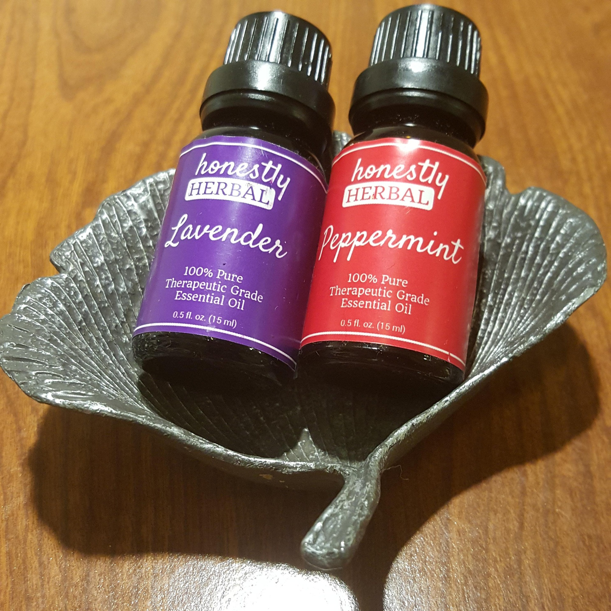
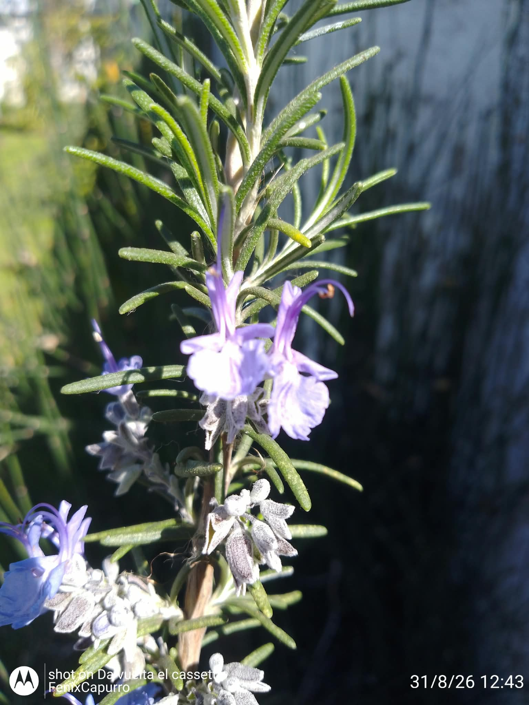
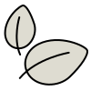

Infusión
Para hojas y flores tiernas. Se vierte agua que rompió el hervor sobre la planta, se tapa y se deja reposar 5 a 10 minutos. Proporción de base: 1 cucharada por taza.
Del herbario a tu cocina: infusiones, aceites, ungüentos y aguas florales, preparados paso a paso con las plantas que cosechamos en DORILA.
Cuando preparás una infusión o un aceite con tus propias manos, sabés exactamente qué contiene: una sola hierba, o dos, cosechada con tiempo y secada con cariño.
En DORILA trabajamos con plantas medicinales de Uruguay: las secamos a la sombra, las envasamos en tandas chicas y las pensamos para que las usen en casa. Por eso también queremos compartir cómo preparar remedios caseros con ellas: el agua que no se apura, el aceite que espera semanas, la cera que se derrite a fuego lento.
Cada técnica tiene su razón de ser. Las flores prefieren la infusión. Las raíces y las cortezas, la decocción. La piel seca agradece el aceite macerado en frío. Y para una crema, solo falta sumar cera de abejas y mucha paciencia.
Cada planta y cada parte de la planta pide una técnica distinta. Estas son las seis que más usamos en la botica.
Para hojas y flores tiernas. Se vierte agua que rompió el hervor sobre la planta, se tapa y se deja reposar 5 a 10 minutos. Proporción de base: 1 cucharada por taza.
Para raíces, cortezas y semillas. Se ponen en agua fría, se hierven 10 a 20 minutos y se reposan tapadas.
Plantas secas cubiertas con aceite en un frasco, en lugar cálido y oscuro de 2 a 6 semanas, agitando de vez en cuando.
La misma idea, pero acelerada: aceite entre 60 y 80 °C (sin hervir) con las hierbas, 20 a 60 minutos, luego se filtra.
Se derrite cera de abejas a baño maría con el aceite infusionado y se suman mantecas (karité, coco). Se vierte y solidifica.
Un puñado de flores o hojas en una bolsa dentro del agua caliente de la bañera. Simple, relajante y subestimado.
Con las plantas que tenés en casa o que pedís en la botica. Tocá cada receta para ver ingredientes y pasos.
La infusión más clásica de la botica: calma la panza después de comer y prepara la noche para dormir.
Tip: no dejés la manzanilla más de 10 minutos: empieza a amargar. Los vapores también cuentan: respirá la taza antes del primer sorbo.
Carminativa y refrescante, la aliada perfecta para comidas abundantes o esa sensación de panza pesada.
Tip: si la toman chicxs o personas con estómago sensible, usá hierbabuena sola: es la más suave de las dos.
El clásico de la abuela para piel seca, rozaduras y masajes suaves. Solo pide tiempo y paciencia.
Tip: las hierbas siempre secas. El agua que queda en la planta fresca es la puerta de entrada de las bacterias.
Cuando tenés poco tiempo: el calor le saca el aroma y las propiedades al romero en menos de una hora.
Tip: para nudos en el cuello o la espalda, funciona muy bien en masajes combinado con el aceite de masaje de DORILA.
La piel irritada, las rozaduras y las manos que trabajan: este bálsamo las acompaña de verdad.
Tip: probá siempre una poca cantidad en la muñeca antes del primer uso. Si hay irritación, no lo uses.

Cold creamUna emulsión de agua en aceite que hidrata sin ser pesada. Base con cera, aceite y una infusión floral.
Tip: los cítricos son fotosensibles: si sumás unas gotas, hacelo de noche y usá protector solar de día.

AromaterapiaEl remedio casero más lindo de todos: un saquito de flores que se convierte en aliado del sueño y del guardarropa.
Tip: estrujá el saquito suavemente antes de dormir: despierta los aceites volátiles de la flor.
Para aderezar una ensalada, regar un pan casero o regalar: el pensado de la cocina. Cuidado, es adictivo.
Tip: este aceite es para comer, no para la piel. No dejes el ajo sumergido más de una semana.
Los remedios caseros duran lo que sus cuidados. Estas son las reglas que respetamos de verdad en la botica.

La humedad es la enemiga: seca bien antes de macerar o infusionar cualquier planta.
Guardá aceites y cremas en frasco oscuro, lejos del sol y el calor.
Anotá planta, fecha de preparación y fecha de vencimiento estimada.
Una gotita de aceite de vitamina E ayuda a prevenir la oxidación y a prolongar la vida útil.
Si un aceite se ve turbio o huele raro, desechalo. Su salud no vale un frasco.
Sobre todo en tinturas y aceites esenciales: unas gotas alcanzan y sobran.
Estas recetas tienen fines informativos y de uso cotidiano. No sustituyen el consejo de profesionales de la salud. Embarazadas, personas en tratamiento médico o con enfermedades crónicas: consulten siempre antes de usar plantas medicinales. Ante cualquier reacción, suspendé el uso y consultá.
Contanos cómo te fue con tu remedio casero, o pedinos las hierbas para arrancar con estas recetas.
Contanos qué te interesa y te respondemos por WhatsApp con todo el detalle.
Trabajamos por WhatsApp y coordinamos la entrega según tu punto del país.